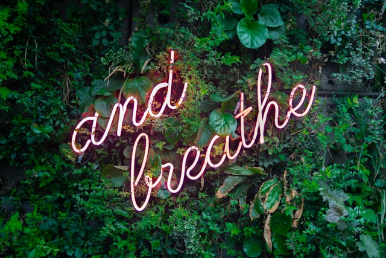

May is Mental Health Awareness Month. To show our support, we’re donating 50% of all sales throughout the month of May to the American Foundation for Suicide Prevention. These funds will go toward vital initiatives like advancing mental health research, improving suicide prevention interventions, training clinicians, and advocating for policy that will save lives. AFSP’s mission is to save lives and bring hope to those affected by suicide.
We invite you to stop by and consider donating towards this cause. Your generosity will help combat the stigma surrounding mental health and provide critical resources to those in need. Together, we can make a difference and help save lives across the nation.
A churro lover’s dream come true! This Snickerdoodle Latte is made with warm hints of cinnamon and brown sugar. This drink has the perfect blend of sweet spices and rich, freshly brewed espresso. This menu item can be sold hot or iced.

Nestled in the heart of historic North East, PA is a woman-owned coffee shop—The Bean Coffee House.
We sat down with owner Tamara Walters to discuss her journey in starting her own coffee shop. Tamara says that she has had a lifelong passion to invest in the Erie community.
The Bean’s coffee is truly a one-of-a-kind as all of their coffee is roasted on-site by Tamara’s husband, Nate. This means that their coffee is ground fresh and brewed daily for customers to enjoy—now that’s a quality cup of joe! Even more special, The Bean is a women-owned business. As a fellow women-owned business, we’re inspired by Tamara and her team’s dedication to craft delicious, high-quality coffee for the Erie community.
Want to learn more about our new mobile coffee camper? Visit our Mobile Coffee Camper page here.